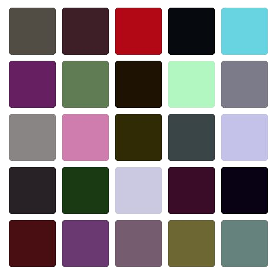
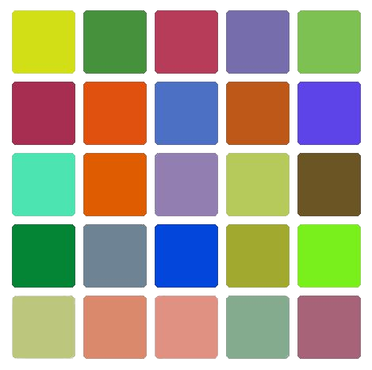
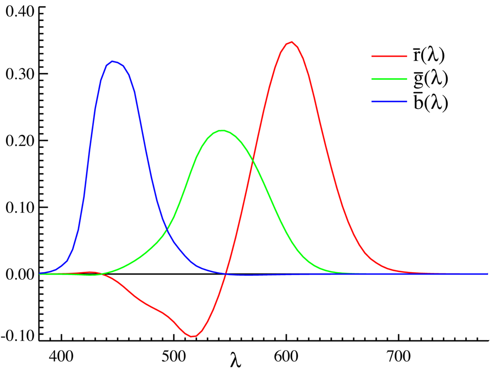
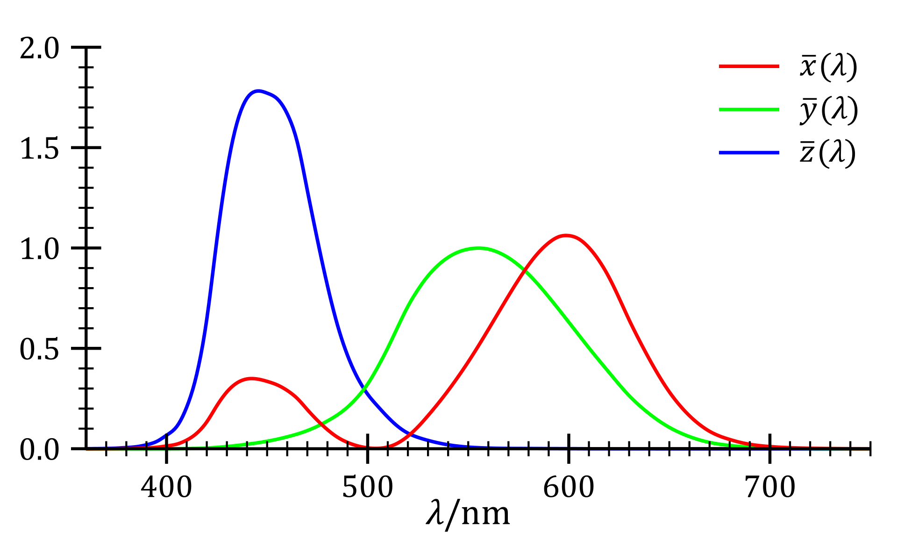
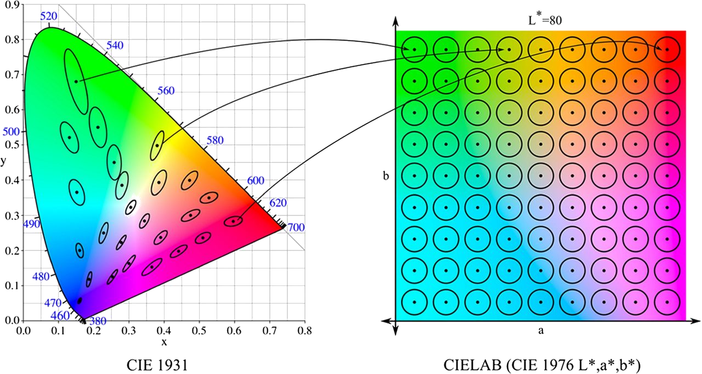
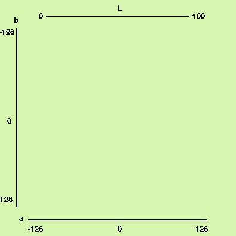
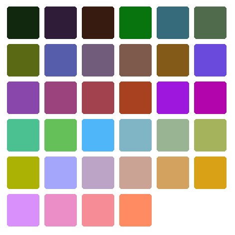

TLDR (click to show/hide)
I came across the need to generate n-many unique-looking colors for a research project visualization. It turns out using the traditional RGB or HSV color models with random values is actually pretty bad at generating perceptually distinct colors. Digging a bit into the field of color science, this article comes across some models built for this sort of thing (CIE XYZ and CIE LAB) and discusses an approach that lets us get exactly the result we were looking for.
Hello! Hope everyone had a wonderful winter break.
I've finally wrapped up all my grad school applications and I've been able to spend some time learning React and thinking about a problem I encountered while making a game this past semester. The problem arose when I needed to come up with a bunch of unique random colors for objects in the game. It reminded me of Bertrand's Paradox in that depending on which color model we use to represent our colors, the amount of randomness in the results could vary widely.
Introduction to Color Science
Color science is the study of human perception of colors. In displaying colors on machines such as computer monitors, tv screens, and our phones, it can be very useful to have a mathematical description of colors. Color science gives us the idea of a color space, which is exactly the sort of mathematical model we want for this. Some common models you may be familiar with are RGB, HSV, and CMYK which describe colors as points in three or four dimensional space.


Visualizations of the RGB and HSV color models respectively
Generating Colors
Say we want a set of random colors to distinctively label some objects. Our first approach might just be choosing to use the standard HSV color model for artists and uniformly picking values for each of hue, saturation, and value. Doing this gives us the following:

Random colors created by uniformly sampling each of the hue, saturation, and value coordinates
This wasn't so great, a lot of the colors end up looking fairly similar which is exactly what we don't want to happen. The reason for this is that certain regions of the HSV color space have a lot of similarities. For example, if the value (brightness) is low, all of the colors will end up looking black, or if the saturation is low, all of the colors will look gray despite them having uniformly random hues.
Maybe if we use the RGB color model, we can get some better results:

Random colors created by uniformly sampling each of the red, green, and blue coordinates
This gave us significantly better results! This is where we can see the resemblance of our problem to Bertrand's Paradox. The randomness of our colors depends on the coordinate system to select them. The RGB colors are good, but there are still quite a few of them that are too close to one another. This begs the questions: what is the best space to use when generating colors?
The CIE LAB Color Space
One of the issues with the RGB and HSV models is that they are not perceptually uniform. That is, the euclidean distance between colors in these spaces isn't necessarily proportional with our perceived distance between the colors. This problem was addressed with the creation of CIE LAB by the International Commission on Illumination in 1976. Although its not particularly important for how we will be using the color space, I'd like to talk a bit about how it was created since I found it pretty interesting.
In 1931, the CIE RGB color space was created with the intention of getting a basis of colors which could be used to represent the entirety of the human percievable color space. This was done through great effort by having many test participants use varying levels of brightness of red, green, and blue light sources to match colors that were presented to them. The idea was that the three types of cone cells in our eyes roughly corresponding to red, green, and blue could be used to additively construct all colors we humans were able to see. The experiments ended with the following chart:

CIE RGB color component color functions
Notice that for some wavelengths, participants needed a 'negative' intensity of red light to reconstruct the color shown to them. This means that in order to match the target color, red had to be added to the target color to be able to get a percieved match. This tells us is that red, green, and blue alone are not able to constructively add to all of the possible colors in the visible spectrum.
Enter the CIE XYZ color space created in the same year as CIE RGB. X, Y, and Z represent three theoretical colors from which nonnegative values alone could be used to construct all possible wavelengths. Although shown in red, green, and blue below, X, Y, and Z are 'imaginary' colors constructed mathematically to give us this desired nonnegative property.

CIE XYZ color component color functions
From CIE XYZ, the CIE LAB color space was created in 1976 with these conversions between the coordinates. The idea for getting the space to be perceptually uniform was to look at a set of MacAdam Ellipses across the space. These ellipses are regions of a chromaticity diagram (a 2D slice of a color space with constant luminance) which consist of perceptually indistinguishable colors.

Conversion from CIE XYZ to the more perceptually uniform CIE LAB
Nice! Now we have a space where the euclidean distance between coordinate values representing the colors actually corresponds to our perceptual difference! (As a note, CIELAB is not perfectly perceptually uniform. Adjustments have been made to create slightly different colorspaces which do a better job of this, but CIELAB is still pretty good.)
Generating Colors Using CIE LAB
There are a few different methods we can try to get well spaced colors. If the goal is to maximize the minimum of the pairwise distances between colors we generate, the two best methods we could use are likely the ones covered in this article. Here, they use a method of repulsion in which each of the points in CIELAB representing a color push each other away with some force vector resulting in n maximally spaced colors. The other option they use in k-means clustering which also gives some nice results. Since both of these are already talked about there, I'd like to try something different.
In particular, instead of trying to maximize the distance between each of the colors, I want to see what a color pallete would look like with n evenly spaced colors. My idea for this is to select points on some lattice in CIELAB to get an array of colors which are perceptually the same distance apart from their adjacent colors in the pallete.

Lattice in the CIELAB colorspace
The gif above shows what we get when we look at the simple cubic lattice intersected with CIELAB. We can snake through the points in our lattice and lay out the colors associated with those points to see what our evenly spaced color pallete looks like:

Colors along a lattice in CIELAB
The resulting colors have a nice distinction to them. There are a few that feel a little close here because we generated so many, but because we are using CIELAB, we have a minimum guaranteed perceptual difference between any pair of colors.
I'm pretty satisfied with these results! The colors the generator is making are distinct enough for what I wanted to do with my other project and have a nice cohesiveness to them. I'd like to come back to this project in a future article though and see what happens when we intersect CIELAB with different lattices and surfaces and how the color palletes change when we apply transformations to these regions.
Thanks for reading!
Resources
- I Want Hue (A project I found that does something similar)
- Repository for Color Code
- A Great Video on the CIE Color Spaces
- A Short Visualization of CIE XYZ in 3D
- Python colorlib for Querying CIE LAB